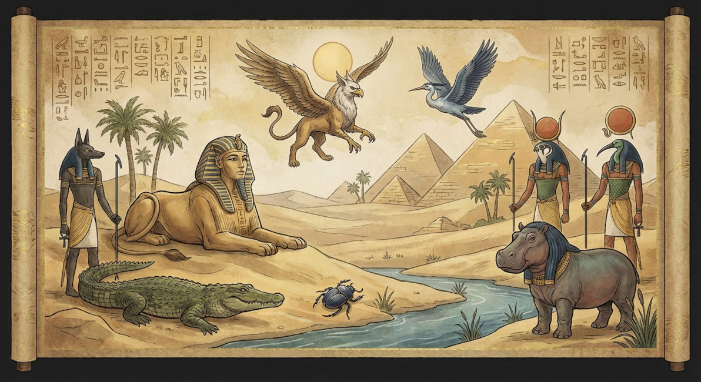
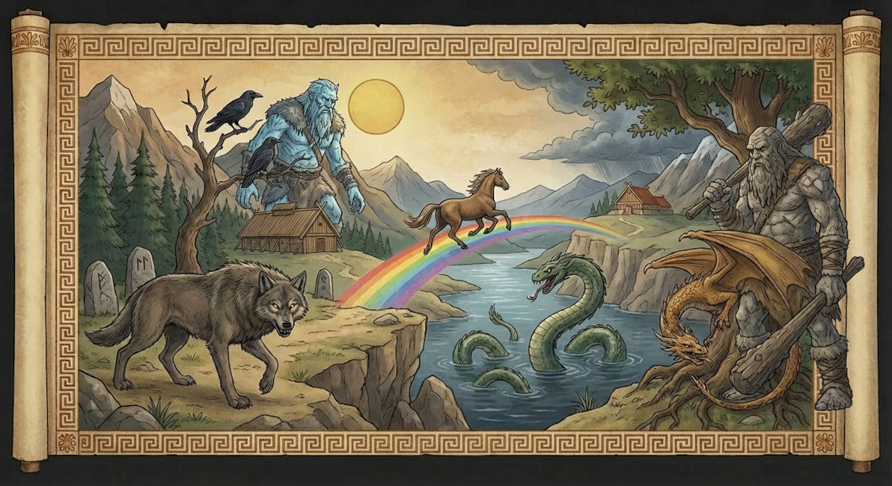
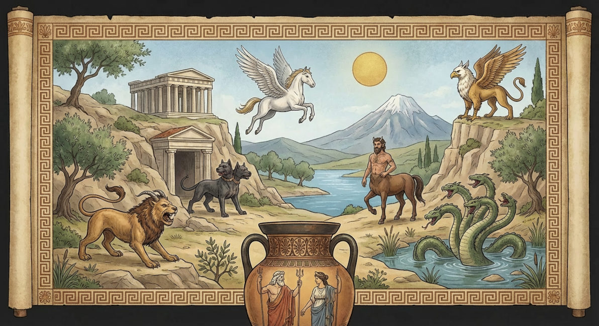
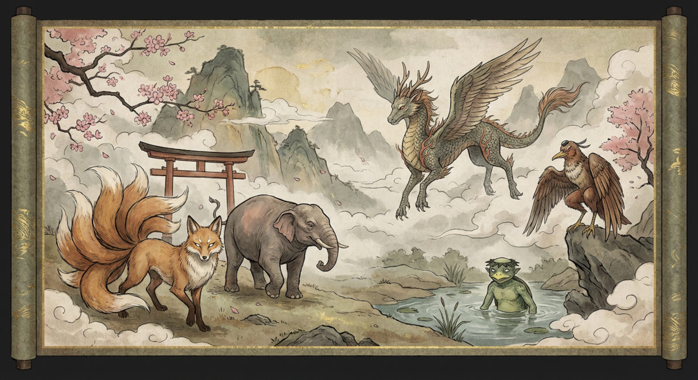
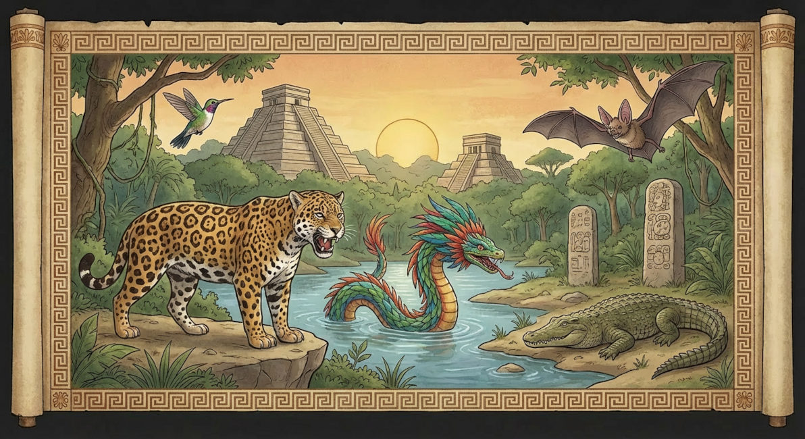

Nas mitologias antigas, os animais e criaturas simbólicas ocupam um papel estruturante na forma como diferentes civilizações compreenderam o universo. Eles representam manifestações do sagrado, forças da natureza, princípios morais e aspectos profundos da psique humana. Ao analisar as mitologias egípcia, nórdica, grega, japonesa e maia, torna-se evidente que os animais funcionam como mediadores entre o mundo humano e o divino, expressando valores culturais, explicações cosmológicas e concepções sobre vida, morte e destino.
Mitologia Egípcia

A mitologia egípcia compreendia os animais como manifestações diretas da energia divina (netjer). Cada criatura simbolizava atributos essenciais para a manutenção da ordem cósmica (Ma’at), reforçando a ligação entre natureza, religião e poder político.
Animais e Criaturas
Besouro(Escaravelho): Símbolo do renascimento e da regeneração, o Escaravelho🔗 estava associado ao deus Khepri🔗 e ao ciclo diário do sol, representando a continuidade da vida após a morte.
Boi(Ápis): O boi Ápis🔗 simbolizava fertilidade, força vital e prosperidade agrícola, sendo venerado como manifestação viva da divindade.
Chacal: Associado a Anúbis🔗, o chacal representava a proteção dos mortos e a transição ordenada entre o mundo dos vivos e o além.
Cobra: A cobra, especialmente a Uraeus🔗, simbolizava proteção, autoridade real e poder mágico, além de representar o caos quando associada a Apófis🔗.
Crocodilo: Ligado ao deus Sobek🔗, simbolizava a dualidade da natureza: fertilidade e destruição, refletindo o poder imprevisível do Nilo.
Falcão: Representação de Hórus🔗, o falcão simbolizava realeza, vigilância divina e ordem cósmica.
Gato: Associado à deusa Bastet🔗, simbolizava proteção doméstica, fertilidade e equilíbrio.
Íbi: Ligado a Thoth🔗, representava sabedoria, escrita e racionalidade.
Leão: Associado à deusa Sekhmet
, simbolizava guerra, poder solar e força destrutiva que também podia se transformar em cura.
Mitologia Nórdica

A mitologia nórdica expressa uma visão de mundo marcada pela impermanência e pelo confronto entre ordem e caos. Os animais e criaturas simbolizam forças cósmicas inevitáveis, muitas vezes superiores ao controle dos próprios deuses.
Animais e Criaturas
Águia: Posicionada no topo de Yggdrasil🔗, simboliza vigilância, sabedoria e consciência universal.
Cabra (Heiðrún🔗): Fornecedora do hidromel de Valhalla, simboliza abundância e recompensa após a morte heroica.
Corvos (Hugin e Munin🔗): Representam pensamento e memória, pilares da sabedoria de Odin🔗.
Dragão (Níðhöggr🔗): Rói as raízes do mundo, simbolizando decadência e ameaça constante ao equilíbrio cósmico.
Fenrir🔗 (Lobo): Encarnava o caos e o destino inevitável, sendo peça central do Ragnarök.
Gato: Animal sagrado de Freyja🔗, simboliza fertilidade, magia e sensualidade.
Javali (Gullinbursti🔗): Associado a Freyr🔗, representa prosperidade, fertilidade e luz.
Jörmungandr🔗 (Serpente): Representa o ciclo eterno e o equilíbrio frágil do universo.
Sleipnir🔗 (Cavalo): Cavalo de Odin🔗, simboliza transcendência e travessia entre mundos.
Mitologia Grega

Na mitologia grega, os animais e criaturas mitológicas funcionam como símbolos morais, desafios heroicos e extensões do poder divino, refletindo conflitos humanos e leis cósmicas.
Animais e Criaturas
Águia: Símbolo de Zeus, representa autoridade, justiça e soberania divina.
Cavalo: Associado a Poseidon, simboliza força, liberdade e instabilidade emocional.
Cérbero🔗: Guardião do submundo, representa o limite intransponível entre vida e morte.
Coruja: Símbolo de Atena🔗, representa sabedoria racional e estratégia.
Hidra🔗: Representa desafios persistentes que se multiplicam.
Leão de Nemeia🔗: Simboliza força invencível e a superação por meio da inteligência.
Minotauro🔗: Representa impulsos irracionais e a ruptura da ordem natural.
Pégasos🔗: Simboliza inspiração, liberdade e elevação espiritual.
Mitologia Japonesa

Influenciada pelo xintoísmo, a mitologia japonesa vê os animais como kami ou seres espirituais capazes de transformação, profundamente conectados às forças da natureza.
Animais e Criaturas
Dragão (Ryū)🔗: Simboliza sabedoria, proteção e controle das águas.
Garça🔗: Representa pureza, longevidade e transcendência espiritual.
Kappa🔗: Criatura aquática que simboliza os perigos da natureza e o respeito aos rios.
Kitsune🔗 (Raposa): Representa inteligência, magia e transformação, podendo ser protetora ou enganadora.
Serpente🔗: Associada à fertilidade, chuvas e renovação.
Tanuki🔗: Símbolo de prosperidade, adaptação e travessura.
Tengu🔗: Criaturas aladas que simbolizam poder espiritual, disciplina e ambiguidade moral.
Tigre: Representa força, coragem e proteção espiritual.
Mitologia Maia

Na mitologia maia, os animais são manifestações diretas das forças da natureza e possuem profunda ligação com o tempo, o cosmos e o submundo (Xibalba). Eles representam guias espirituais, símbolos de poder e mediadores entre os planos da existência.
Animais e Criaturas
Águia: Representa o sol, o céu e a visão espiritual elevada, estando associada ao poder divino e à realeza.
Cão: Considerado guia das almas, o cão auxiliava os mortos em sua travessia para o submundo, simbolizando lealdade e proteção espiritual.
Crocodilo: Associado à criação do mundo, simboliza a terra primordial flutuando sobre as águas do caos.
Jaguar: Um dos animais mais sagrados da mitologia maia, simboliza poder, noite, guerra e o submundo. Era associado a reis e xamãs.
Morcego: Ligado a Camazotz🔗, representa morte, sacrifício e transformação.
Serpente: A serpente emplumada simboliza sabedoria, fertilidade e conexão entre céu e terra.
Veado: Representa equilíbrio natural, caça ritual e a ligação entre humanidade e natureza.